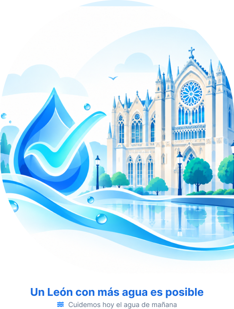

Conoce el estado del agua en tu colonia al instante
Monitorea los días de servicio de agua (tandeo) en León, Guanajuato y contribuye reportando fugas en la vía pública para cuidar nuestro recurso.

¿Cómo funciona GotaCheck?
Debido al estrés hídrico regional en León, el agua se distribuye por sectores. Nuestra plataforma simplifica tu día a día en tres pasos:
1. Consulta tu Colonia
Revisa rápidamente qué días exactos tendrás servicio de agua y planifica tus actividades.
2. Reporta Fugas
Si ves una fuga en la calle, levanta un reporte con foto y ubicación desde tu celular.
3. Atención Rápida
Las cuadrillas de SAPAL reciben la alerta en tiempo real para reparar el problema sin desperdiciar agua.
Sobre Nosotros
Somos un equipo apasionado de estudiantes de la Universidad Tecnológica de León (UTL), de la carrera de Ingeniería en Tecnologías de la Información e Innovación Digital.
Nació como un proyecto para la asignatura de Desarrollo de Aplicaciones Web, pero nuestro objetivo con GotaCheck León es real: aplicar la tecnología para resolver el problema del agua en nuestra ciudad, empoderando a la ciudadanía y apoyando a las autoridades a ser más eficientes.
Contáctanos
¿Tienes dudas, sugerencias o quieres integrar tu colonia al sistema? Escríbenos y nuestro equipo te responderá pronto.